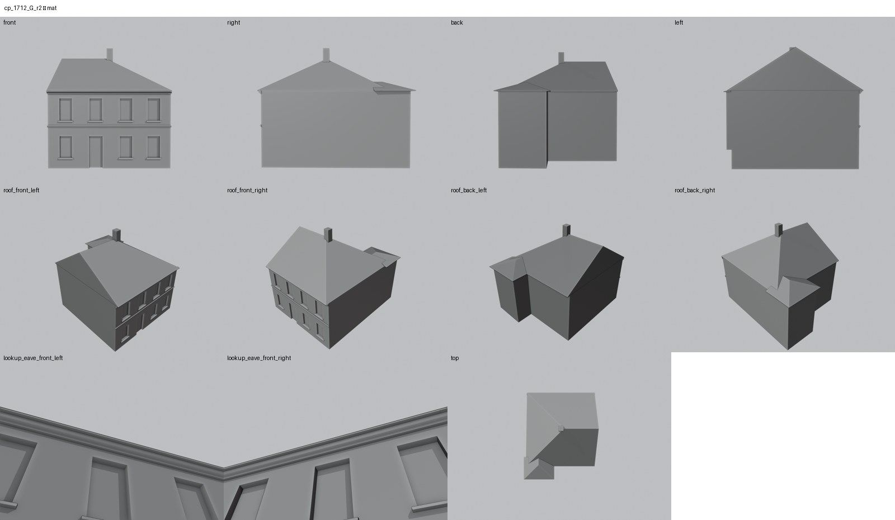

Identita domu
V databázi Libuše struktura 1712 neexistuje (struktura 1721 je jiný dům na Vtelenské cestě). Existenci domu dokládá situace 1940 na listu cp_262_005 a karta ze schodů, která jmenuje „řadu 258, 1608 a 1712“. Podobu nedokládá nic: model je hypotéza podle GIS půdorysu a sousedů.
Použité prameny: GIS půdorys, situace 1940 na listu cp_262_005, text karty cp_258,259,260,1608_001.
Přílohy v databázi (0)
V databázi Libuše tento dům nemá žádnou strukturu ani přílohy.
Geometrie
| Revize geometrie | r2 |
|---|---|
| Poloha | GIS půdorys id 2053 (ulice Kulová) |
| Šířka průčelí | 11,00 m |
| Výška okapu | 7,00 m (odhad) |
| Podlaží | 2 (hypotéza) |
| Střecha podle pramenů | sedlová se štítem k 1608 a valbou k volnému konci (hypotéza) |
| Otvory / vikýře | 8 / 0 |
| Polygonů | 212 |
| Kontrola podkroví (19. 10. 2026) | prošla: vlasové zásahy do podkroví 0 ze 103 680 paprsků ze 120 pohledů; nekryté zdivo 0,00 m², střecha nad prázdnem 0,00 m² |
Kontrolní pohledy

Textury
zatím bez textur
Až Codex dodá texturovaný model, objeví se v prohlížeči nahoře volba Textury (Codex).
Hypotézy
Vše níže je model_hypothesis, provisional, locked: false.
- CELÝ DŮM JE HYPOTÉZA: v Libuši neexistuje struktura 1712 (prohledány všechny oblasti); jen GIS obrys a sousedství
- počet podlaží a členění odvozeno od sousedů
Soubory
- Geometrie čp. 1712, GLB
- Pracovní model: F:\MOST\output\kulova_eave_fix_claude_2026-10-19\houses\cp1712\r2\cp_1712_G_r2.blend
- Plán modelu: F:\MOST\output\kulova_eave_fix_claude_2026-10-19\houses\cp1712\geometry_plan.json